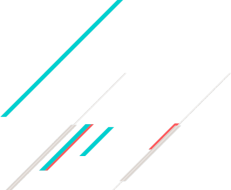

再见了 互相嫌弃的老同学 再见了 来不及说出的谢谢 再见了 不会再有留的课堂作业 再见了......

时间，请你在慢些脚步
青院请让我在看你一眼
栀子飘香，又逢一年毕业时，在这一淡淡的，涩涩的季节里， 我将我心中仅存的记忆通过初夏这一沁人的晨风，转化成了这一 季节里纯纯的素香，幽幽的，幽幽的。淡淡的栀子花香，满空弥漫着属于这一季特有的离绪。 花香夹杂着心绪，通过初夏这一微微的晨风，使我将曾经的记忆重新拾起，在脑海中浮现着一个个属于我们的故事。
栀子飘香，又是一年毕业时！
在成长的岁月中 曾经陪你笑陪你愁的朋友 是一辈子都不会忘记的 愿彼此都能珍惜这份友谊
风是透明的 雨是滴答的 云是流动的 歌是自由的 爱是用心的 恋是疯狂的 天是永恒的
你是最难忘的
再
见
了